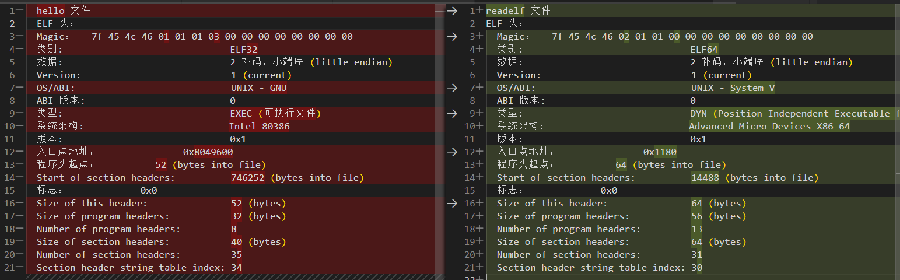

Lab1 Report
Lab1 Report
思考题
Thinking 1.1
- 编译程序 hello.c，再用 objdump 反编译.o 与可执行文件
1 | x86： |
- 反编译.o 文件时某一些指令的地址为 0，没有取得应有的地址，但在链接成为可执行文件后，则被填入地址。
- 通过观察不同工具链编译出的可执行文件和使用 objdump 解析的结果，可以发现它们在汇编指令和符号表等方面存在差异。不同的工具链可能使用不同的指令集，因此编译出的可执行文件也会有所不同。
Thinking 1.2
- readelf 解析之前在 target 目录下生成的内核 ELF 文件结果
1 | 0:0x0 |
- 使用 readelf -h 得到两个文件文件头差异

- 编写的 readelf 中 Elf32_Ehdr 等针对的是 32 位的 ELF 的解析，hello 程序 ELF 类别是 32 位，可被编写的 readelf 解析，但 readelf 文件本身位 64 位 ELF，不可被解析。系统工具则都可解析
Thinking 1.3
在实验操作系统的启动过程中，有一个引导加载程序的阶段。引导加载程序位于启动入口地址处，它的作用是将内核从磁盘中加载到内存中，并将控制权转移到内核入口地址。实验操作系统的内核入口地址放置在内存布局图的正确位置时，引导加载程序可以正确地将控制权转移到内核入口地址处，进入内核。
因此，尽管内核入口地址不是启动入口地址，但通过引导加载程序的正确执行，内核入口仍然可以被正确地跳转到。
难点分析
- 理解整体架构，查找、理解所需内存配置信息与关联函数参数使用，如：
- 1.1 中查找各个结构体中成员表示的含义，对应 ELF 文件结构。节头中的地址信息需要通过 binary ELF 的文件头地址 +shoff 为入口偏移 + 节头数 * 节头大小 e_shentsize 得到当前节头地址，再通过该节头结构体中的 sh_addr 得到节头中的地址信息。
- 1.4 中 printk 时第三个参数传入的是 unsigned long，十进制有符号数需要提前判断是否为负数，取绝对值，提出负号单独处理
- 1.4 中 c 的语法和与逻辑，一些指针的使用，以及一点点 mips 的语法
实验体会
- 体会到内核设计运行的复杂与严谨，内存信息需有序规划分配。以及多种类型文件的不同方式的编译，分别负责整体的不同功能方面。
- 体会到一些 c 语言的强大的灵活基础能力
- 记得要读网站上的题目，以及教程 exercise 上下文的信息提示，如“Note 1.3.5 通过查看内存布局图，同学们应该能找到.text 节的加载地址了，.data 和.bss 只需要紧随其后即可。”